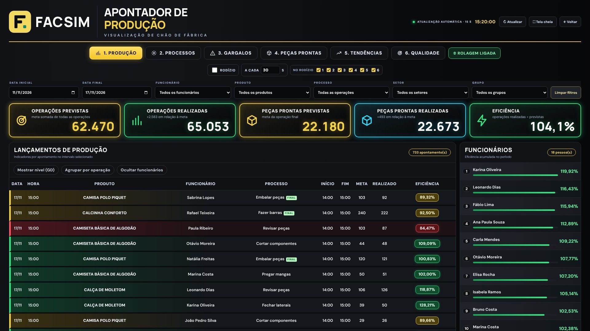
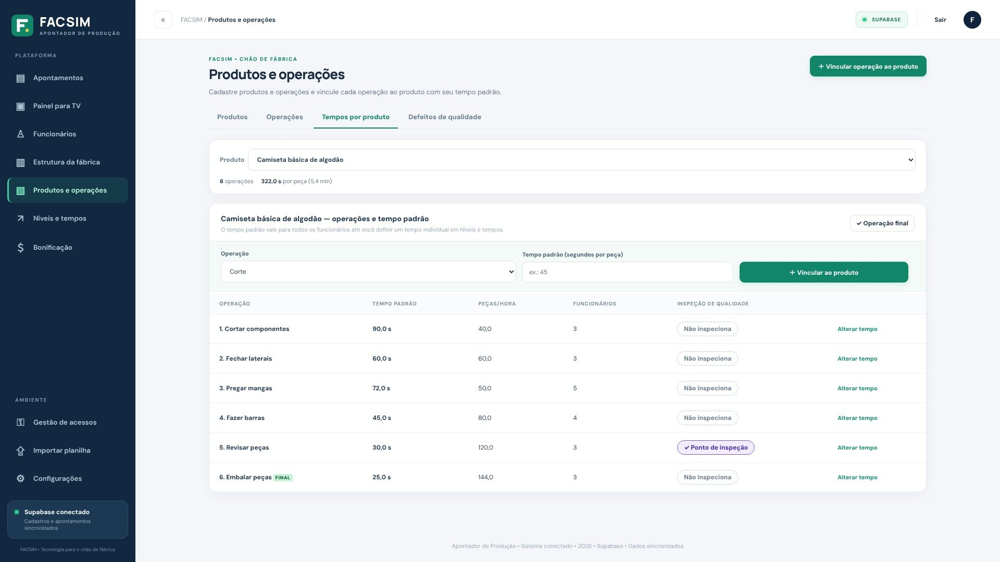
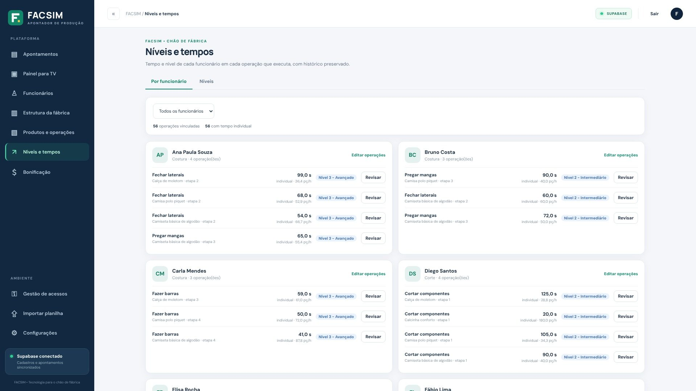
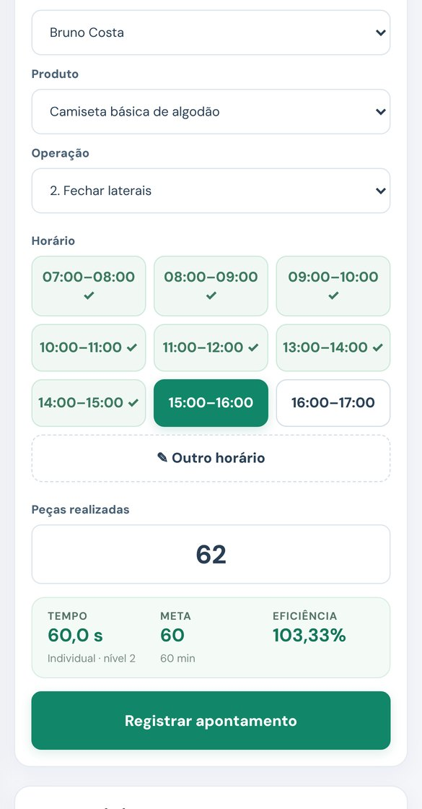
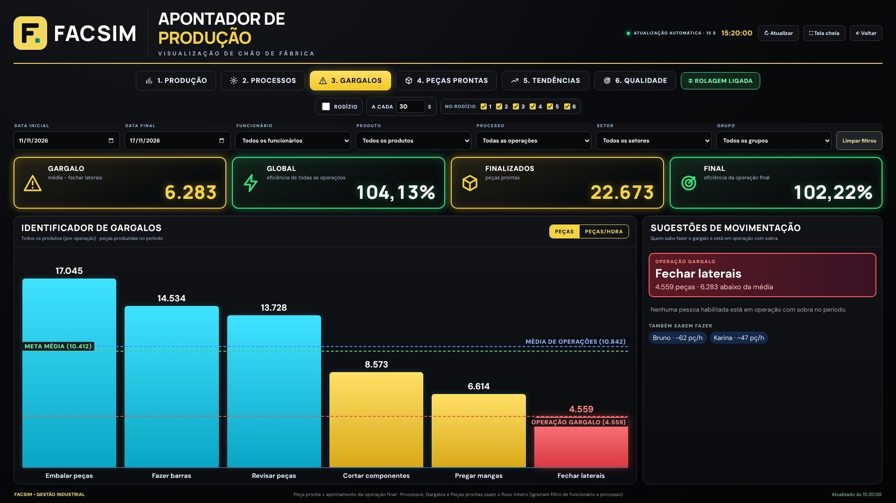
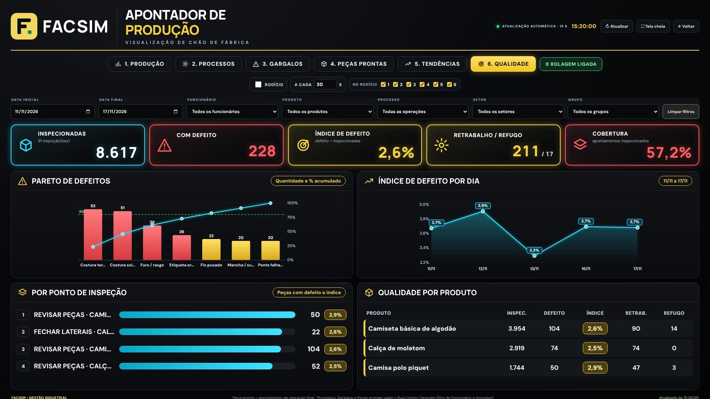
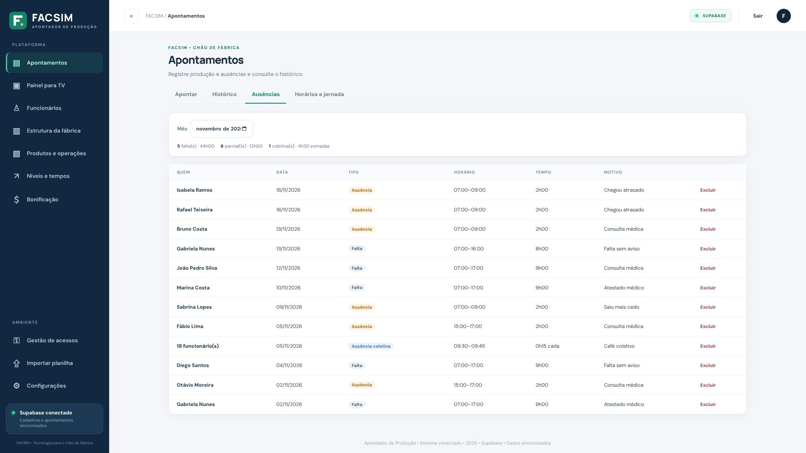
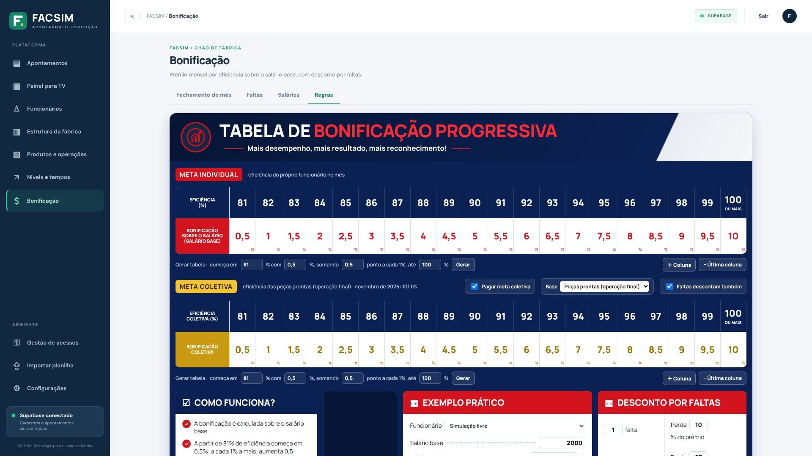
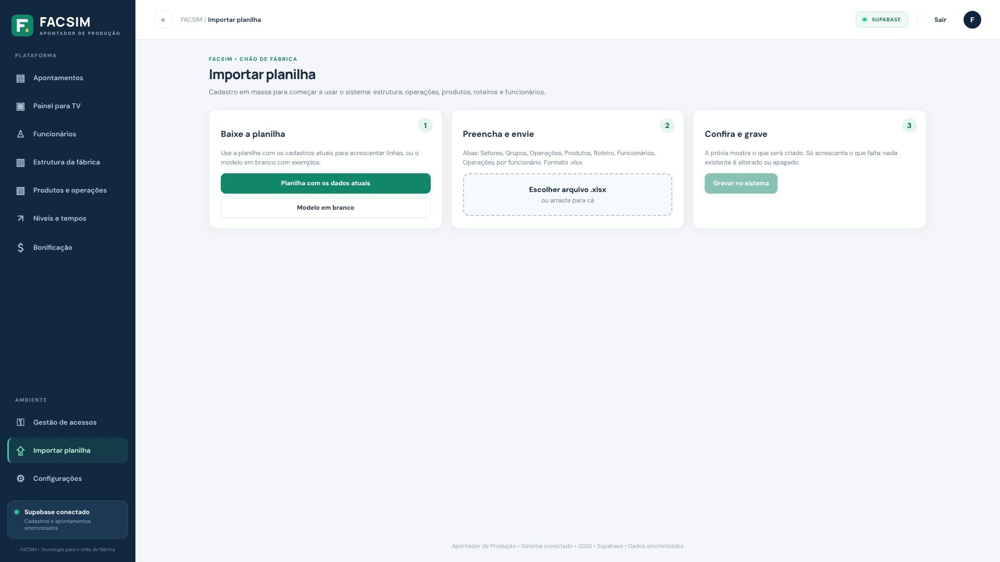

A produção da sua confecção na TV, hora a hora.
O FacSim transforma o apontamento de cada operador em painéis de gestão à vista. A equipe acompanha a meta durante o dia e você corrige o rumo antes do expediente acabar.

Painel real do FacSim exibido na TV da fábrica, com dados de demonstração.
Sem apontamento, você só descobre o problema no fim do dia.
Na maioria das confecções a produção é conferida quando já não dá mais tempo de reagir.
A meta é igual para todos
Quem está aprendendo e quem domina a operação recebem a mesma cobrança. Um se frustra, o outro se acomoda.
O gargalo aparece tarde
Quando a peça não sai no final da linha, a operação que travou já acumulou horas de atraso.
A equipe não vê o resultado
Sem números à vista, o esforço de cada pessoa fica invisível, e a bonificação vira discussão.
Veja o FacSim em 60 segundos.
Do apontamento no celular do operador até o painel na TV, em tempo real.
- Tempo padrão e metas individualizadas por nível de cada operador
- Meta calculada automaticamente, inclusive em horários fracionados
- Faltas, intercorrências, qualidade e bonificação no mesmo sistema
- Seis painéis de gestão à vista que se alternam na TV
Como funciona
Quatro passos entre o cadastro e a TV ligada no chão de fábrica.
Cadastre o tempo padrão de cada operação
Monte o roteiro de cada produto, do corte à embalagem, com o tempo de cada etapa. Já tem isso numa planilha? Dá para importar.

Defina o nível de cada operador
Cada pessoa tem o próprio tempo por operação, de acordo com o nível de domínio. A meta respeita quem está aprendendo e desafia quem já domina.

Aponte a produção hora a hora pelo celular
Escolha o operador, a operação e o horário, e digite as peças. O FacSim calcula a meta do período na hora, mesmo que sejam só 30 minutos.

Acompanhe tudo na TV da fábrica
Os painéis mostram meta e realizado, eficiência, ranking de operadores e gargalos. Eles se atualizam sozinhos e alternam entre si.

Tudo o que a gestão da produção precisa
Controle de qualidade
Registre inspeções por apontamento, com peças inspecionadas, defeituosas, retrabalho e refugo. O Pareto de defeitos mostra onde agir primeiro e o painel de qualidade vai para a TV junto com os outros.

Faltas e intercorrências
Lance faltas, saídas antecipadas e paradas coletivas, como reuniões e ginástica laboral. O tempo perdido entra no cálculo, então a eficiência mostra a realidade da produção.

Programas de bonificação
Monte a tabela de bonificação por faixa de eficiência, individual e coletiva, com regras de desconto por faltas. No fechamento do mês o FacSim calcula o valor de cada pessoa.

Comece com o que você já tem
Funcionários, produtos, operações e tempos podem vir de planilhas. A implantação fica mais rápida e você não precisa redigitar nada.

Um método de consultoria transformado em tecnologia.
O FacSim nasceu da parceria entre a GUT Consultoria e Treinamentos e o consultor Cristiano Cardoso. A lógica que ele aplica em confecções de todo o país agora funciona todos os dias, em tempo real, dentro da sua fábrica.
Ganho de produtividade
Tempo padrão, metas claras e acompanhamento hora a hora.
Respeito às individualidades
Cada operador é medido pelo próprio nível, não por uma média da fábrica.
Gestão da qualidade
Produzir mais sem perder o padrão das peças.
Feito para quem produz roupa
Confecções
Que querem enxergar a produção de cada setor, do corte à expedição.
Facções
Que trabalham por peça e precisam de eficiência para manter a margem.
Consultores e gestores
Que acompanham várias empresas e precisam de números confiáveis.
Dúvidas frequentes
Preciso instalar algum programa?
Não. O FacSim funciona no navegador do celular, do computador e da TV. Basta ter internet.
Que TV eu preciso para os painéis?
Qualquer TV com navegador de internet, ou uma TV comum ligada a um computador ou a um aparelho com navegador. O modo TV ocupa a tela inteira e alterna os painéis sozinho.
Quem faz o apontamento?
Um apontador, o líder de setor ou o próprio operador, pelo celular. Cada usuário tem um perfil de acesso: administrador, editor ou somente leitura.
Funciona para facção?
Sim. O FacSim foi desenhado para a realidade da confecção e da facção, com operações, roteiros por produto e metas por operador.
Quanto custa?
O valor depende do tamanho da sua equipe e do tipo de implantação. Fale com a gente pelo WhatsApp para receber uma proposta.
Veja o FacSim funcionando com a sua produção.
Preencha os dados e fale direto com a nossa equipe pelo WhatsApp. Mostramos o sistema e como seria a implantação na sua fábrica.